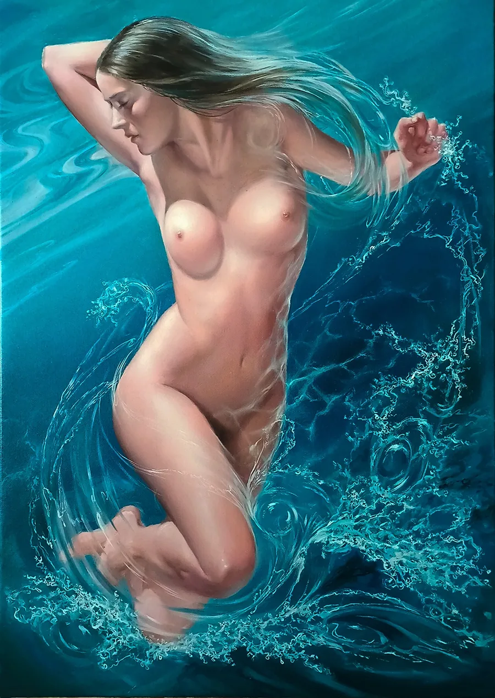
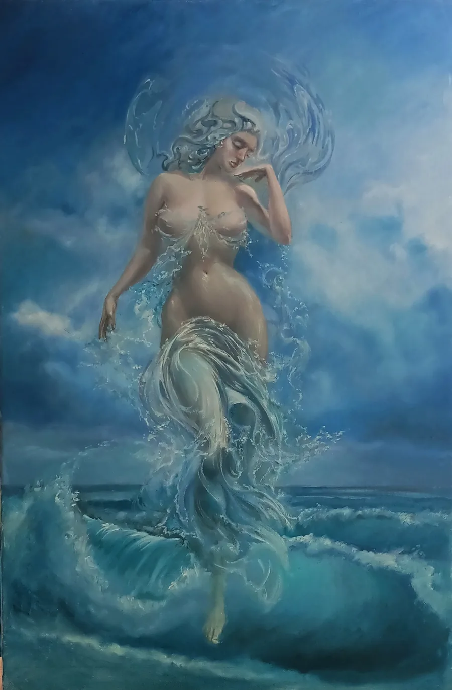
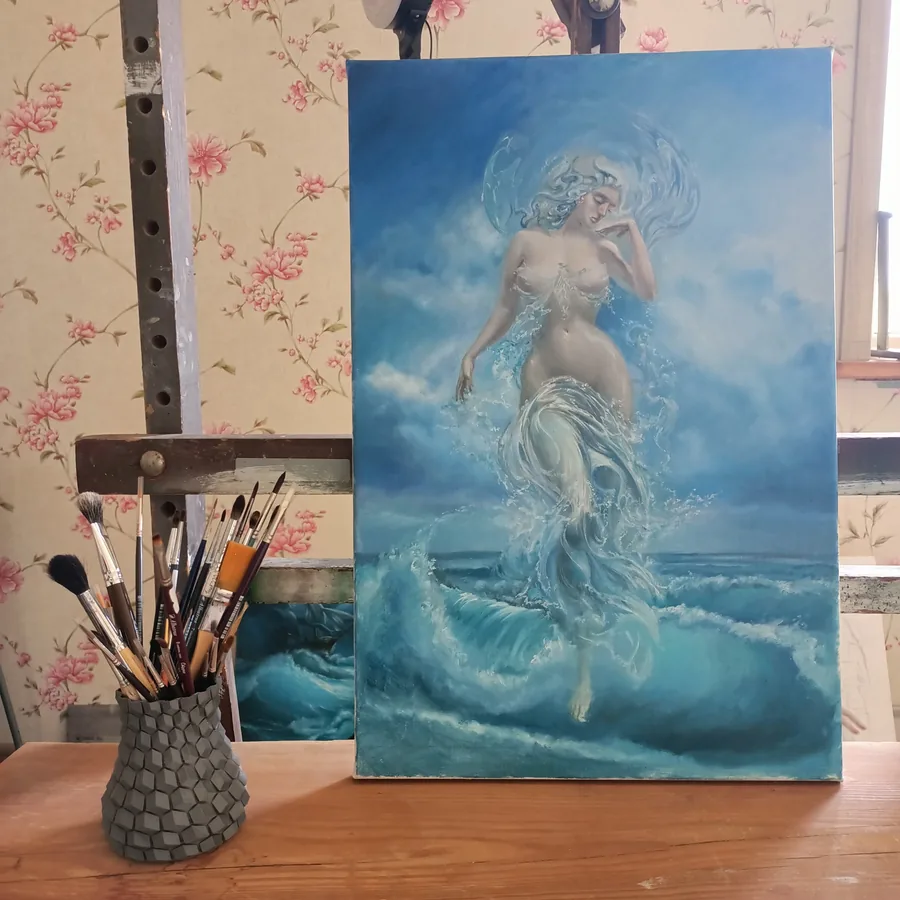
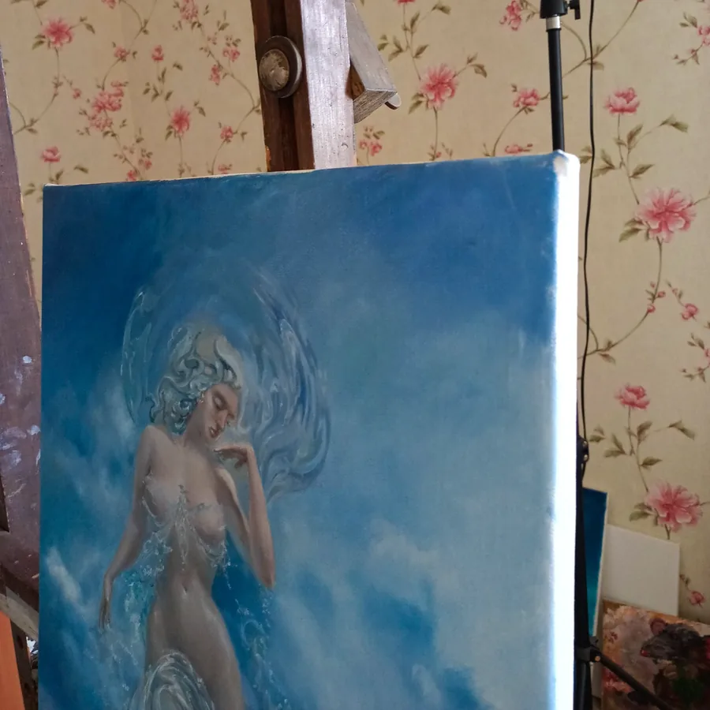
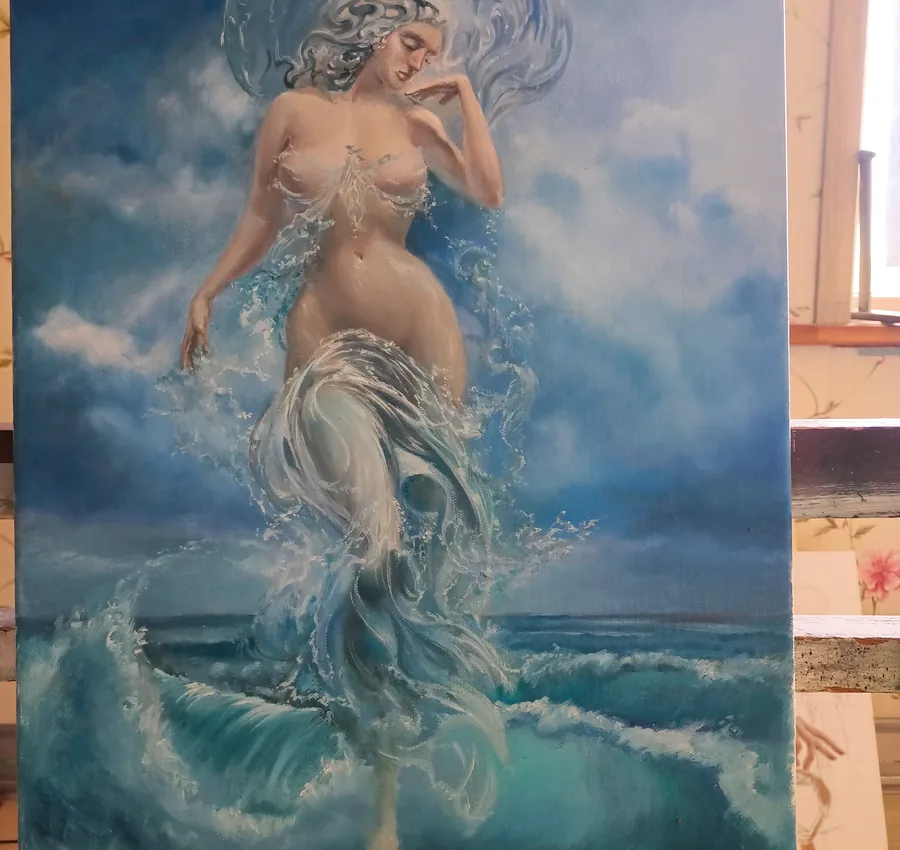

50 × 70 cmAphrodite Awakening
Available- Worldwide free delivery
- 7-day returns accepted
Figurative · 2019

40 × 50 cmOriginal artwork
Aphrodite Rising from the Sea captures a standing female figure emerging through waves and bright splashes, transforming a familiar mythological theme into an immediate study of motion. The raised arm extends the vertical composition, while the opposite hand settles near the hip, giving the pose both confidence and natural rhythm. Long hair and moving water create overlapping curves that guide the eye around the figure. Reflected highlights break across the blue surface, producing a dramatic contrast between cool marine color and warmer passages of flesh. Created as an oil painting on linen, the work draws on classical realism while allowing the sea to remain energetic and painterly. Rather than treating the setting as a backdrop, the artist makes foam, spray, and shifting water essential to the image. This Aphrodite painting will appeal to collectors interested in Greek mythology art, ocean-inspired figurative painting, and original fine art. Its compact 40 × 50 cm format gives the scene a concentrated, jewel-like intensity.
Recorded price$750Acquired



Explore more